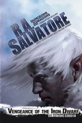

Vengeance of the Iron Dwarf
Écrit par R. A. Salvatore, publié en Mars 2015.
AVERTISSEMENT
Cette page révèle certaines informations qui pourraient gâcher la lecture du roman. Si vous pensez lire ce livre dans un futur proche, mieux vaut ne pas parcourir ce résumé !
1484. Onzième jour d'Uktar, les rois nains Connerad Brawnanvil et Emerus Warcrow, ainsi que le second du roi Harnoth, Oretheo Spikes, se réunissent à Felbarr, accompagnés de Drizzt, Catti-brie, Athrogate et Bruenor. Ce dernier révèle sa véritable identité à tous, et leur signifie que lui et ses amis sont ici pour leur demander de prendre part au conflit et d'aider les humains. Connerad, roi de Castelmithral, accepte. Nous sommes donc en plein hiver et, à la demande de la Mère matrone Quenthel, la campagne offensive des orcs est stoppée, afin de ne pas provoquer l'intervention de royaumes par delà les Marches d'Argent comme le Cormyr. Les villes humaines et les forteresses naines restent toutefois assiégées. Le dragon blanc Arauthator a bien essayé d'attaquer Lunargent, mais les magiciens de cette cité l'ont repoussé. Pendant ce temps, Regis et Wulfgar, perdus dans les souterrains de l'Upperdark infestés d'orcs, tentent sans succès de rejoindre Castelmithral. Ils décident alors de se diriger vers Felbarr et terminent, après de nombreuses escarmouches, par rencontrer les survivants de Sundabar qui se sont réfugiés dans les cavernes sous la ville. La nouvelle troupe qui vient de se former, conduite par la capitaine Aleina, passe des semaines dans les souterrains avant de parvenir, par un coup de force, à rejoindre Lunargent et son grand mage Taern Hornblade.
Quelques jours après leur retour à Castelmithral, les nains se rendent compte que les orcs font retraite vers le nord. L'elfe noir et ses compagnons tentent alors une sortie pour vérifier cet état de fait, mais tombent dans un piège. Arauthator, chevauché par Tiago, surprend Drizzt, qui ne doit son salut qu'à une formidable boule de feu lancée par Catti-brie sur le dragon et qui désarçonne son cavalier, lequel se brise une jambe durant sa chute. Mais malgré cet épisode, dans toutes les Marches d'Argent, les sièges continuent.
Nous sommes maintenant en 1485, lorsqu'une douzaine d'elfes noirs s'infiltrent dans Adbar et lancent un nuage toxique sur les provisions de la citadelle. Rationnés, les nains tentent bien quelques sorties, mais les forces adversaires sont trop nombreuses. Coupés des autres citadelles depuis des mois, Cattie-brie lance alors un sort de divination pour connaitre la situation de Felbarr et Adbar, et découvre ainsi la situation précaire dans laquelle elles se trouvent, poussant les compagnons à agir. Les elfes de Bois Chatoyant se rendent également compte de tout cela, et s’apprêtent aussi de leur côté à entreprendre une action lorsqu'une elfe étrangère se présente à Sinnafein. Celle-ci, qui en fait n'est autre qu'un des deux dragons que Jarlaxle est allé chercher, ouvre alors un portail magique qui donne dans Castelmithral et demande à la leader des elfes de l'accompagner. Là, le dragon, toujours sans révéler sa véritable identité, mais laissant entendre qu'il est là à la demande de Jarlaxle et qu'Amber et Afafrenfere l'accompagnent, met au point un plan pour permettre de briser le siège de la forteresse naine lorsque les rivières dégèleront, à la fin de l'hiver, entre le troisième et le quatrième mois. Et lorsque le jour tant attendu arrive, Ilnezhara et Tazmikella effrayent les géants, mettant momentanément en fuite les assaillants. Alors, avec de plus l'aide de trois cent archers elfes, les compagnons réussissent à sortir de la citadelle, accompagnés de trois cents guerriers nains. La troupe se dirige en premier vers Adbar et délivre la citadelle. Ce n'est qu'à ce moment que Jarlaxle se présente face à Drizzt, et que les deux dragons de cuivre révèlent leur véritable nature. Le mercenaire drow explique alors que son action n'est pas contre Menzoberranzan, qui se retire d'ailleurs du conflit, mais contre les orcs qui nuisent à ses affaires dans les Marches d'Argent. Puis c'est ensuite Felbarr qui sera délivrée, par les souterrains.
Au même moment, en effet, la Mère matrone Quenthel s’apprête à mettre fin au conflit et fait revenir à Menzoberranzan plus des trois quarts des elfes noirs qui y participaient. Elle a en effet obtenu ce qu'elle voulait : peu de pertes, un seigneur de guerre orc qui va causer des problèmes à la surface durant des années, et dans toutes les Marches d'Argent le bruit qui court que c'est la maison Do'Urden (représentée par Tiago et sa femme Saribel, Ravel le frère de celle-ci, Tos'un et sa fille Doum'wielle) qui est au commande. Tiago, justement, qui avant de retourner à la cité des elfes noirs, souhaite ajouter à son palmarès d'autres victoires. Lunargent étant trop bien protégée par ses magiciens, c'est Everlund au sud qui devient sa cible. Mais Regis découvre le plan et obtient de Lord Hornblade, le dirigeant de Lunargent, une petite troupe de soixante guerriers, ainsi que quelques mages de batailles et prêtres pour tenter d'intervenir.
Jarlaxle active alors son plan et prévient toutes les parties d'une attaque contre Castelmithral : les nains des trois citadelles, mais aussi Regis et Wulfgar, et même Tiago, en n'oubliant pas de dire à ce dernier que Drizzt y sera. Le Seigneur de guerre orc décide de continuer vers Everlund avec près de 200 000 guerriers mais, comme prévu, le drow ne peut résister à l'idée d'affronter son ennemi favori et, avec ses deux dragons blancs et le peu d'hommes qui lui reste, il retourne vers le nord. La petite troupe au sol sera arrêtée par le halfelin, son compagnon barbare et les Chevaliers en Argent de Lunargent conduits par Aleina, mais Tiago et Tos'un qui chevauchent les dragons parviennent à la forteresse naine où la grande bataille a déjà commencé. Les quatre dragons s'affrontent dans les airs et le premier à tomber est le jeune dragon blanc. Prenant cela comme un mauvais signe, ajouté au fait que les nains résistent de manière spectaculaire et que Tos'un est tué, les géants abandonnent la guerre et retournent vers leurs terres. Puis, voyant qu'il n'arrive pas à prendre le dessus sur les deux dragons de cuivre, Arauthator fera de même quelques temps plus tard. Ce sera le signal de la débandade pour les orcs. Castelmithral est libéré. Les nains nettoient ensuite la région et poussent même jusqu'à prendre Dark Arrow Keep, la cité des orcs, sans un combat, alors qu'Aleina brise le siège de Lunargent. Les compagnons sont de nouveau réunis. Mais tout le monde le sait, la vraie bataille de la guerre des Marches d'Argent sera celle d'Everlund.
Et le jour où la horde orc arrive aux portes de cette cité au sud de la région, tous les chevaliers de Lunargent avec leur lot de magiciens, les deux dragons de cuivre et la garnison d'Everlund mettent en déroute les envahisseurs. Ceux-ci n'ont alors d'autre choix que de se replier vers le nord jusqu'à leur territoire de Many-Arrows, où ils tombent sur les nains qui occupent leur forteresse. Bruenor mettra personnellement fin aux jours d'Hartusk. Et quelques temps plus tard, lors du septième mois de 1485, le ciel des Marches d'Argent reprend sa couleur naturelle. Chez les elfes noirs, tout le monde n'est pas déçu par ce dénouement. Gromph, qui a laissé son frère Jarlaxle agir à sa guise du début à la fin, est maintenant persuadé que sa fille n'a jamais était aussi proche de devenir Mère matrone de Menzoberranzan.